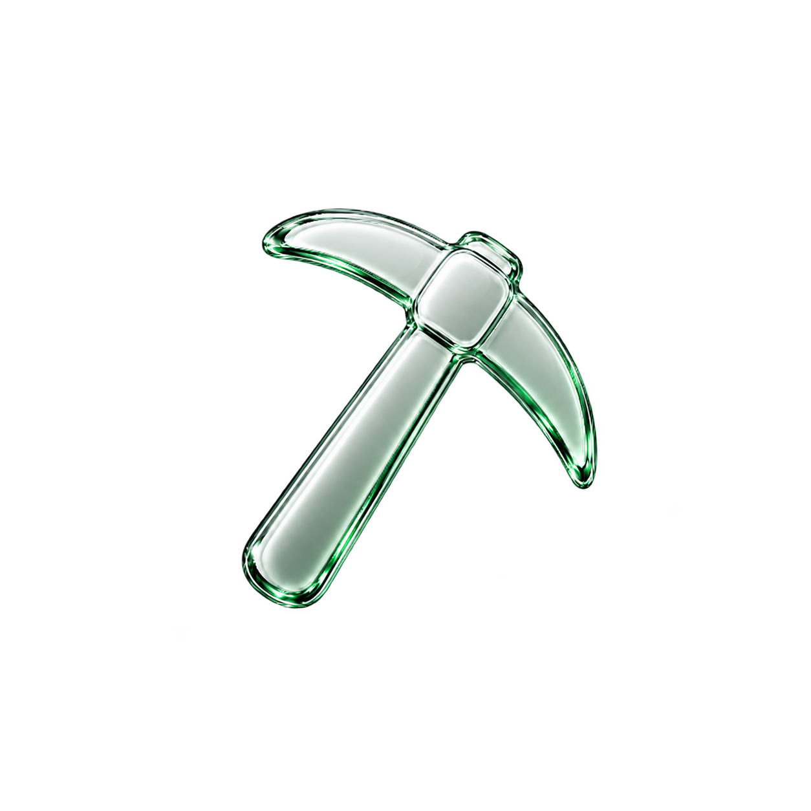

An open coordination layer
- Discover community-led market narratives
- Launch tokens with terms visible up front
- Coordinate token and liquidity incentives
- Keep a public record of every mine

MinnowMinnow gives creators a transparent way to launch community tokens around market narratives - and gives everyone else one place to understand the rules, follow the market and participate onchain.
A creator starts with a thesis: a technology, sector or public-market story that a community wants to gather around. Minnow is designed to turn that thesis into an independently issued community token with visible launch terms.
After launch, participants can inspect the token, follow the mine's onchain state and decide whether to contribute tokens or liquidity under its published rules.
Each layer answers a different question: what is the community gathering around, how does the token begin, and how do people participate?
Inspect the thesis, creator disclosures, proposed rules and risks before taking action.
Creators define the token configuration, supply, allocations and participation conditions.
Participants follow the onchain state and join under the same published rules.
The mining vocabulary describes the protocol's participation model. It does not refer to physical mining hardware.
This is the intended lifecycle. Final mechanics will be published with the protocol specification.
Explain the narrative, creator identity, disclosures and risks.
Define supply, allocations, fees, liquidity and completion conditions.
Deploy the token and mine configuration through published contracts.
Users inspect the terms and decide independently whether to join.
The lifecycle ends only under the conditions disclosed at launch.
Every launch is organized around the information creators and participants need to make informed decisions.
Thesis, category, creator identity and disclosures.
Supply, allocations, permissions and launch rules.
Published eligibility and transparent reward logic.
Onchain progress and completion conditions.
An onchain protocol for launching and participating in community tokens organized around market narratives.
Creators, communities and project teams use it to define the narrative, token, allocation, liquidity plan and disclosures.
No. It provides no equity, dividends, voting rights, revenue rights or claim on a company.
Connect a wallet, review the mine terms and participate under the published token and liquidity rules.
The narrative, creator disclosures, token configuration, participation rules, liquidity conditions and onchain lifecycle state.
No. Community tokens can lose all value. Contract, liquidity, regulatory and creator risks may apply.
Verified links, contract addresses and live data will appear only when they exist.
See how launching works